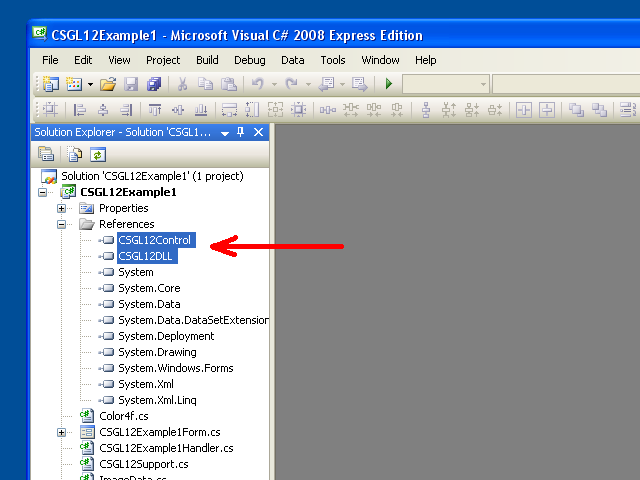

C# OpenGL interface
for the Windows operating system
Colin Fahey

CSGL12Control on a Form, showing a "fractal" pixel shader program and GDI+ drawing copied to a texture

Two CSGL12Control instances on a Form, showing pixel shader programs and textures

A 3D avatar that roams the desktop and can be moved with the cursor
1. Software
This version of this document should only be included with the "CSGL12" software. If you cannot locate the software, then please go to the following web site to download the software:
http://colinfahey.com.
2. All of the C# computer code in the C# OpenGL interface (CSGL12) is in the "public domain"
I wrote all of the C# computer code within the C# OpenGL interface (CSGL12).
I declare all of the C# computer code within the C# OpenGL interface (CSGL12) to be in the "public domain".
Therefore, the computer code can be used for any purpose (commercial or private), without payment, without restrictions, without obligations, and without acknowledging the original author.
The code can be modified, or portions reused, without restrictions, and without obligations, and without acknowledging the original author.
The example programs include a small amount of computer code (specifically, "shader" computer code) written by other people. Such code is not within the interface itself and can be trivially removed. Such code is merely to demonstrate the simplicity of using the interface to create and use "shader" programs.
3. Introduction
"CSGL12" is a collection of C# computer code files which implements an interface to the OpenGL graphics library (including all extensions of OpenGL up to the year 2007) for the Windows operating system.
The C# computer code files in the "CSGL12" collection make it easy to add OpenGL drawing to any C# / .NET software with a "Form" (an instance of "System.Windows.Forms.Form").
The "CSGL12" collection of computer code files includes a file named "CSGL12Control.cs", which defines a class named "CSGL12Control", derived from "System.Windows.Forms.Control". Each instance of "CSGL12Control" represents an independent OpenGL drawing area. It is very easy to add multiple instances of CSGL12Control to a Form (an instance of System.Windows.Forms.Form).
4. Characteristics and requirements of "CSGL12"
The code is only for Windows operating systems that support the .NET 2.0 Framework (Windows 2000, Windows XP, Windows Vista, Windows 7)
The code can be compiled using "Microsoft Visual C# 2008 Express Edition" (a free compiler), or similar C# compilers.
The code requires being built with the "[X] Allow unsafe code" build option selected so that optimized image data copying functions can be used. If you are an expert C# programmer you will be able to easily identify the portions of the C# code that require the "unsafe" option and disable them if desired or required. Image data copying is 10 times faster using "unsafe" code than the alternative, and this is why such code is used. If you build a DLL that contains all of the "unsafe" code, then a project that uses that DLL does not require being built with the "unsafe" option, and so you can infer that the absence of the "unsafe" option in a project does not imply any extra safety (because numerous DLL files which are used implicitly or explicitly by the program contain "unsafe" code).
The code can be compiled and used by any of the following:
Microsoft Visual C# 2008 Express Edition
Microsoft Visual Studio 2008
Microsoft .NET 3.5 SDK
SharpDevelop
Mono Project
The code offers most OpenGL extensions (through the year 2007), including "vertex shaders" and "pixel shaders".
The code provides 1570 functions related to OpenGL:
336 GL functions
51 GLU functions
19 WGL functions
1164 extensions
The code offers some alternative variations of the 1570 functions with different parameter types, for convenience.
The code defines more than 3244 constants for OpenGL.
The code makes it possible to have multiple OpenGL drawing contexts, all animating independently, on any "Form".
Clicking on a "CSGL12Control" gives it "input focus", allowing subsequent keyboard and mouse wheel input. Cursor clicks and movements are received when the cursor is within the rectangular area of an instance of "CSGL12Control".
The code include functions to demonstrate how to do some common OpenGL tasks in C# and .NET.
The code lists all OpenGL constants and functions in alphabetical order in "class GL" in "GL.cs", making it easy to determine if any constant or function is missing (which is unlikely, except for extensions adopted after the year 2007).
The example programs show how to do GDI+ drawing to a Bitmap, and then how to copy that Bitmap to an OpenGL texture.
This enables text and other GDI+ drawing capabilities to contribute to an OpenGL scene.
The GDI+ Bitmap can be updated and uploaded to an OpenGL texture as often as once per OpenGL frame.
The example programs show how to choose from among several different "pixel shader programs" while the program is running.
The example programs show how to write OpenGL buffers to image files (JPG, BMP, GIF, PNG).
Press Shift + 0 (shift-zero) to write the OpenGL buffer to image files.
The example code shows how compiling "GL.cs" in to a DLL file, and then adding that DLL file to another project, can prevent the Microsoft code editors (e.g., Microsoft Visual C# 2008 Express Edition, etc) with "IntelliSense" (context-sensitive code completion) from becoming frequently and persistently unresponsive (repeatedly pausing for many seconds, making the editor totally unusable). Having the file "GL.cs" directly included in any project being edited by a Microsoft code editor is not practical, unless a person is willing to endure the slowness of the editor. This problem has affected Microsoft Visual Studio 2003, 2005, 2008, and will probably affect the 2010 version, too.
The example code demonstrates the use of multiple instances of "CSGL12Control" on a "Form".
The example code includes code to make a 3D "avatar" that roams the desktop of Windows.
5. Example programs included with "CSGL12"
5.1 "CSGL12DLL"
The project named "CSGL12DLL" produces a DLL file named "CSGL12DLL.dll" which contains "class GL" (defined in the C# file "GL.cs").
Putting "class GL" in to a DLL file, and then using that DLL in other projects that use "class GL", helps avoid an extreme problem with all Microsoft code editors with the IntelliSense feature. Using the C# file GL.cs directly in a project would cause any Microsoft code editor with the IntelliSense feature to become totally unresponsive and unusable almost continuously due to the inefficiency of the IntelliSense feature (and the fact that IntelliSense evidently blocks the main program thread of the editor).
If you are using a C# code editor that is not produced by Microsoft (e.g., "SharpDevelop", "MonoDevelop", etc), then you can simply include the file "GL.cs" directly in your projects, and you would be unlikely to gain any benefit from using "CSGL12DLL.dll".
5.2 "CSGL12Control"
The project named "CSGL12Control" produces a DLL file named "CSGL12Control.dll" which contains "class CSGL12Control" (defined in the C# file "CSGL12Control.cs").
Putting "class CSGL12Control" in to a DLL file, enables that "Control" (i.e., a class derived from "System.Windows.Forms.Control") to be added to the "Toolbox" of Microsoft Visual C# 2008 Express Edition (and similar C# editors). Having "CSGL12Control" in the "Toolbox" makes it easy for a person to add an instance of "CSGL12Control" to a "Form" in the "Designer" (e.g., a person can simply use the cursor to select and drag an instance of "CSGL12Control" from the "Toolbox" to a "Form").
The "CSGL12Control" object manages an OpenGL drawing context. Multiple instances of "CSGL12Control" can coexist on a "Form".
5.3 "CSGL12Example1"
The project named "CSGL12Example1" produces an executable program file (EXE) named "CSGL12Example1.exe". The program uses "CSGL12DLL.dll" and "CSGL12Control.dll" to display an instance of CSGL12Control and draw a cube using OpenGL.
The program demonstrates the use of four different "pixel shaders" ("fractal", "brick", "wood", and "cartoon").
The program also demonstrates the use of "GDI+", a .NET drawing library, to draw text and other shapes to a "Bitmap" object (a "GDI+" object), and then copy the image data from that "Bitmap" to a "texture" in OpenGL, thus allowing the image drawn by "GDI+" to appear in OpenGL drawing. This ability is very useful because OpenGL lacks many of the 2D drawing features found in "GDI+" and similar 2D drawing libaries.
5.4 "CSGL12Example2"
The project named "CSGL12Example2" produces an executable program file (EXE) named "CSGL12Example2.exe". The program uses "CSGL12DLL.dll" and "CSGL12Control.dll" to display two instances of CSGL12Control, each of which draws a cube using OpenGL.
The program has a "SplitContainer" "Control" on the "Form". Each of the two areas of the "SplitContainer" contains an instance of CSGL12Control. Thus, a person can adjust the position of the split between the two instances of CSGL12Control. This demonstrates the flexibility of the CSGL12Control.
One of the instances of CSGL12Control sends events to a set of event handlers in an instance of "CSGL12Example2Handler1.cs", which uses the same code as "CSGL12Example1Handler.cs" in the "CSGL12Example1" example project. Therefore, one of the instances CSGL12Control draws a cube with one selected "pixel shader" from among four available "pixel shaders".
The other instance of CSGL12Control sends events to a set of event handlers in an instance of "CSGL12Example2Handler2.cs", which draws a cube using a texture image (or a "checkerboard" pattern if an image file named "image.jpg" is not found).
5.5 "CSGL12Avatar"
The project named "CSGL12Avatar" produces an executable program file (EXE) named "CSGL12Avatar.exe". The program uses "CSGL12DLL.dll" and "CSGL12Control.dll" to draw a cube using OpenGL on to "Form" without a border, with color based transparency enabled, to draw a 3D "avatar" that roams the Windows desktop area.
The moving avatar can be clicked and dragged to a new location using the cursor. Double-clicking the avatar will make it vanish. Although the code merely draws a cube, OpenGL can be used to draw other things.
Multiple instances of the "avatar" program can be started. Thus, many independent "avatar" instances can simultaneously roam the Windows desktop. This is amusing. An expert C# programmer might enjoy finding ways to coordinate the activity of many such "avatar" instances.
Unfortunately, the rate at which the Window object with transparency is updated on the screen is much slower than the rate at which OpenGL can draw. The "avatar" only updates 10 times per second. I do not know if this can be improved.
5.6 "CSGL12BuiltExecutableExamplesForReference"
The directory named "CSGL12BuiltExecutableExamplesForReference" contains DLL files and EXE files produced by all of the example projects. These files are provided as a reference, so that the files can be tested immediately, even if a person does not have the ability to compile the various projects from the provided C# code.
5.7 "CSGL12UsefulCode"
The directory named "CSGL12UsefulCode" contains C# files that might be useful to people who want to do commonplace drawing operations with OpenGL. The directory also includes the DLL files "CSGL12DLL.dll" and "CSGL12Control.dll" for convenience.
The code in that directory defines various class types, such as Color4f, Vector3f, Matrix4x4f, Triangle, Mesh, ImageData, Texture, ShaderProgram, etc. The code is reasonably efficient, but the code is only intended to inspire people to develop their own implementations.
6. CSGL12 files
The "CSGL12" collection of C# computer code files includes the files shown in the following diagram:

The "CSGL12" collection of C# computer code files includes the files shown in this diagram.
The "CSGL12" software also includes projects to create the two DLL files ("CSGL12DLL.dll" and "CSGL12Control.dll") shown in the diagram. Those two DLL files can be created to make it more convenient to create programs that use OpenGL, but it is also possible to create programs using only the C# files directly.
7. "namespace CSGL12" and "class" types
The "CSGL12" collection of C# computer code files defines "namespace CSGL12" and the "class" types shown in the following diagram:

The "CSGL12" collection of C# computer code files defines "namespace CSGL12" and the "class" types shown in this diagram.
A program that does OpenGL drawing can be created using only "class GL" (using the C# file GL.cs directly, or by using the DLL file CSGL12DLL.dll which also contains "class GL"). However, using "class CSGL12Control" (by using the C# file CSGL12Control.cs directly, or by using the DLL file CSGL12Control.dll which also contains "class CSGL12Control") makes adding OpenGL drawing to a Form (System.Windows.Forms.Form) easy and convenient.
The C# classes Color4f, CSGL12Support, ImageData, ..., at the bottom of the diagram are offered only for convenience. Those classes make it easier to create programs that draw using OpenGL. However, you might already have classes that perform the operations in those classes, or you might choose to create similar classes that perform the operations differently or more efficiently. Those classes are offered as examples of a particular code design and implementation.
8. Using a single "CSGL12Control" on a System.Windows.Forms.Form
8.1 Program structure
The following diagram shows how a program with a System.Windows.Forms.Form can use a single "CSGL12Control" to do drawing with OpenGL. The diagram shows the various CSGL12 files used to build the program.

A program using a single "CSGL12Control" on a System.Windows.Forms.Form
8.2 Using Microsoft Visual C# to create the program
(1) Start Microsoft Visual C#.
(2) In the menu, select "File" -> "New Project...".
(3) In the "New Project" dialog box that appears, select "Windows Forms Application", and choose a name for the program, and press "OK".
(4) Immediately save the "Solution" by selecting "File" -> "Save All". A dialog box with the title "Save Project" will appear, enabling you to set the project name, directory location, and the "solution" name for the project. Remember the directory location so that you are ready for the next instruction. Press the "Save" button to save the project.
(5) Copy all files from the directory "CSGL12UsefulCode" in the "CSGL12" software to the directory containing the source code files of the new project (i.e., the directory containing the files "Form1.cs", "Form1.Designer.cs", "Program.cs", etc), such that the files "CSGL12DLL.dll", "CSGL12Control.dll", "Color4f.cs", "CSGL12Support.cs", etc, are alongside the new project files "Form1.cs", etc.
(6) In Microsoft Visual C#, add the "CSGL12" C# files to the project. In the menu, select "Project" -> "Add Existing Item...", and in the "Add Existing Item" dialog box, select all of the C# files from the CSGL12 software ("Color4f.cs", "CSGL12Support.cs", "ImageData.cs", ...).
(7) In Microsoft Visual C#, add "references" to the DLL files "CSGL12DLL.dll" and "CSGL12Control.dll". In the menu, select "Project" -> "Add Reference...", and in the "Add Reference" dialog box, select the "Browse" tab, and select the files "CSGL12DLL.dll" and "CSGL12Control.dll" from the project source file directory, and press "OK".
(8) In Microsoft Visual C#, add the "CSGL12Control" to the "Toolbox". In the menu, select "Tools" -> "Choose Toolbox Items...". In the "Choose Toolbox Items" dialog box that appears, press the "Browse..." button, and go to the project directory with the source code files, and select "CSGL12Control.dll". Press the "OK" button.
(9) In Microsoft Visual C#, view the "Toolbox". In the menu, select "View" -> "Toolbox". In the "Toolbox", go to the section named "General", and locate the item named "CSGL12Control". Using the cursor, click the item named "CSGL12Control" and drag it to the "Form" in "Design" view.
(10) In Microsoft Visual C#, in the "Form" "Design" view, move the "CSGL12Control" instance on the "Form" and adjust its width and height. In the "Properties" panel, set the "Anchor" value to include "Top, Bottom, Left, Right" if you want the control to change size according to changes in the program window size.
(11) In Microsoft Visual C#, change the project properties so that it can use "unsafe" code. In the menu, select "Project" -> "[project] Properties...". Select the dialog box that appears, choose the tab named "Build", and check the check box named "[X] Allow unsafe code". Close the project properties dialog box.
(12) In Microsoft Visual C#, add a new C# file to the project. In the menu, select "Project" -> "Add New Item...". In the dialog box named "Add New Item", choose the template named "Class", and choose a name for the new class type, such as "CSGL12MyHandler.cs", and then press the "Add" button. Look at the example project named "CSGL12Example1", at the file named "CSGL12Example1Handler.cs", as an example of how the code of "CSGL12MyHandler.cs" should be written.
(13) In Microsoft Visual C#, in the "Solution Explorer", click on "Form1". In the menu, select "View" -> "Code" (or press F7, or right-click on "Form1" and choose "View Code". The code in the file "Form1.cs" will appear in the editor. Modify the code in the file "Form1.cs" to be similar to the code in the file "CSGL12Example1Form.cs" in the project "CSGL12Example1" included in the "CSGL12" software. In particular, create a variable for an instance of your event handler class (e.g., "CSGL12MyHandler"), and then add the methods of that class instance as event handlers for the various events of the instance of "CSGL12Control" on the "Form".
(14) In Microsoft Visual C#, compile and execute the program. If you wish to share the program, you must include the two DLL files ("CSGL12DLL.dll" and "CSGL12Control.dll") with the executable file (*.exe).
If you are an expert C# programmer, then you can avoid the need to distribute the DLL files ("CSGL12DLL.dll" and "CSGL12Control.dll") with your executable (*.exe).
Copy the files "GL.cs", "CSGL12Control.cs", and "PrecisionTime.cs" from the projects named "CSGL12DLL" and "CSGL12Control" in the "CSGL12" software to the source directory of your current project. Add the files "GL.cs", "CSGL12Control.cs", and "PrecisionTime.cs" to your project so that they are compiled directly in to the program. Do not have references to "CSGL12DLL.dll" and "CSGL12Control.dll" in the project.
Look at the "CSGL12Example1" project in the "CSGL12" software, and look at the code within the files named "CSGL12Example1Form.cs" and "CSGL12Example1Form.Designer.cs" to see what code is required to create and initialize an instance of "CSGL12Control" on a "Form". Add similar code to "Form1.cs" and "Form1.Designer.cs" to manually create and initialize an instance of "CSGL12Control" on your "Form".
This procedure is very inconvenient, and requires expertise and careful attention, but the resulting executable (*.exe) will not require "CSGL12DLL.dll" or "CSGL12Control.dll". It is very nice to be able to share your software in the form of a single executable file (*.exe) without requiring other files.
8.3 Adding "references" to CSGL12DLL.dll and CSGL12Control.dll
This section includes images of using Microsoft Visual C# 2008 Express Edition to add "references" to the DLL files CSGL12DLL.dll and CSGL12Control.dll to the project.
In the menu, select "Project" -> "Add Reference...". Or, right-click the "References" item in the "Solution Explorer" panel and select "Add Reference...", as shown in the following image.

Context menu for the "References" item in the "Solution Explorer", showing the "Add Reference..." option
After selecting the "Add Reference..." option, a dialog box named "Add Reference" will appear. In that dialog box, select the "Browse" tab, and select the DLL files "CSGL12DLL.dll" and "CSGL12Control.dll", as shown in the following image, and then press the button labeled "OK".

The "Browse" tab of the "Add Reference" dialog box, with the DLL files "CSGL12DLL.dll" and "CSGL12Control.dll" both selected
After pressing the button labeled "OK", the "Add Reference" dialog box will vanish, and the DLL files "CSGL12DLL.dll" and "CSGL12Control.dll" will appear in the "References" branch in the "Solution Explorer", as shown in the following diagram.

The DLL files "CSGL12DLL.dll" and "CSGL12Control.dll" in the "References" branch in the "Solution Explorer"
8.4 Adding CSGL12Control to the Toolbox in Microsoft Visual C# 2008 Express Edition
This section includes images of using Microsoft Visual C# 2008 Express Edition to add CSGL12Control to the "Toolbox" so that a person can easily add instances of CSGL12Control to a "Form" in the "Designer" (Shift+F7 by default).
In the menu, select "View" -> "Toolbox". In the "Toolbox", go to the section named "General", as shown in the following image.

The "General" section of the "Toolbox"
Right-click anywhere within the "Toolbox". Select the option "Choose Items..." in the context menu that appears, as shown in the following image.

The option "Choose Items..." in the context menu for the "Toolbox"
Alternatively, in the menu, select select "Tools" -> "Choose Toolbox Items...".
The "Choose Toolbox Items" dialog box should appear, as shown in the following image.

The "Choose Toolbox Items" dialog box
In the "Choose Toolbox Items" dialog box, press the "Browse" button. In the "Open" dialog box that appears, select the DLL file "CSGL12Control.dll", as shown in the following image, and then press the "OK" button.

The "Open" dialog box, with the DLL file "CSGL12Control.dll" selected
The "CSGL12Control" item should now appear in the "Choose Toolbox Items" dialog box, as shown in the following image. Press the "OK" button.

The "CSGL12Control" item now appears in the "Choose Toolbox Items" dialog box
The "CSGL12Control" item should now appear in the "Toolbox", as shown in the following image.

The "CSGL12Control" item now appears in the "Toolbox"
8.5 Adding CSGL12Control to a "Form" by using the "Toolbox"
This section includes images of using Microsoft Visual C# 2008 Express Edition to add an instance of CSGL12Control to a "Form" by using the "Toolbox".
In the menu, select "View" -> "Designer" (Shift+F7 by default). Or, double-click a "Form*.cs" file in the "Solution Explorer". Or right-click a "Form*.cs" file in the "Solution Explorer" and select "View Designer". Using one of those three methods, the "Designer" window for a "Form" should appear.
In the menu, select "View" -> "Toolbox". In the "Toolbox", go to the section named "General". An item named "CSGL12Control" should appear there, as shown in the following image.
The "CSGL12Control" should already be in the "Toolbox"
Using the cursor, click the item named "CSGL12Control" and drag it to the "Form" in "Designer". An instance of "CSGL12Control" should appear on the "Form" as shown in the following image.

An instance of "CSGL12Control" on a "Form" in the "Designer"
In the "Form" "Designer" view, move the instance of "CSGL12Control" on the "Form" and adjust its width and height.
Click on the instance of "CSGL12Control" on the "Form" to select it. Then, in the "Properties" panel, set the "Anchor" value to include "Top, Bottom, Left, Right" so that the size of the "CSGL12Control" will change in response to changes in the program window size. You might also want to change the variable name (i.e., the value for "(Name)") for the instance of "CSGL12Control" from the automatic default (e.g., "csgL12Control") to something appropriate for your code (e.g., "mCSGL12Control" or "mCSGL12Control1", etc).
The following image shows the "Form" "Designer" view and the "Properties" panel.

An instance of CSGL12Control on a Form in the Designer, and the "Properties" panel
9. Using two instances of "CSGL12Control" on a System.Windows.Forms.Form
The following diagram shows an example of how two instances of "CSGL12Control" can be added to a System.Windows.Forms.Form to do drawing with OpenGL in a program.

A program using two instances of "CSGL12Control" on a System.Windows.Forms.Form
Follow the instructions in the previous section to add a single instance of "CSGL12Control" to a "Form". Then, simply drag a second instance of "CSGL12Control" from the "Toolbox" to the "Form" to add a second "CSGL12Control".
Each instance of "CSGL12Control" will have its own variable name. Each instance of "CSGL12Control" can have its own associated event handler class, or it can use distinct instances of a single handler class type.
Study the example project "CSGL12Example2" to learn how two instances "CSGL12Control" can have their events sent to two distinct instances of custom event handler classes with distinct OpenGL drawing functions.
The example program "CSGL12Example2" has each instance of "CSGL12Control" in a "SplitContainer" "Control", simply to demonstrate one way in which instance of "CSGL12Control" can be used. However, instances of "CSGL12Control" can instead be put directly on to the "Form".
10. Example C# code for a "Form" with an instance of CSGL12Control
The following is the complete C# code contained in the file "CSGL12Example1Form.cs", which is part of the example program "CSGL12Example1".
This code is presented here as a simple example of how an instance of CSGL12Control can be created and used by a "Form".
using System;
using System.Collections.Generic;
using System.ComponentModel;
using System.Data;
using System.Drawing;
using System.Linq;
using System.Text;
using System.Windows.Forms;
using CSGL12;
namespace CSGL12Example1
{
public partial class CSGL12Example1Form : Form
{
public CSGL12Example1Handler mCSGL12Example1Handler;
private System.Windows.Forms.Timer mTimer;
public CSGL12Example1Form()
{
InitializeComponent();
mCSGL12Example1Handler = new CSGL12Example1Handler();
mCSGL12Control1.OpenGLStarted += new CSGL12Control.DelegateOpenGLStarted( mCSGL12Example1Handler.OpenGLStarted );
mCSGL12Control1.KeyDown += new KeyEventHandler(mCSGL12Example1Handler.KeyDown);
mCSGL12Control1.KeyUp += new KeyEventHandler(mCSGL12Example1Handler.KeyUp);
mCSGL12Control1.MouseDown += new MouseEventHandler(mCSGL12Example1Handler.MouseDown);
mCSGL12Control1.MouseUp += new MouseEventHandler(mCSGL12Example1Handler.MouseUp);
mCSGL12Control1.MouseMove += new MouseEventHandler(mCSGL12Example1Handler.MouseMove);
mCSGL12Control1.MouseWheel += new MouseEventHandler(mCSGL12Example1Handler.MouseWheel);
mCSGL12Control1.Paint += new PaintEventHandler(mCSGL12Example1Handler.Paint);
// Use a timer to trigger drawing at the desired frame rate.
//
// Windows timers are not very precise. Also, if we call wglSwapIntervalEXT(1)
// and we specify in the global OpenGL control panel that OpenGL drawing
// should wait for vertical sync (vsync) of the display, then the frame
// rate would be limited to 60 frames/second or 75 frames/second, for example,
// and our program would have to draw each frame in less than 1/60 seconds
// (16.6 milliseconds) or less than 1/75 seconds (13.3 milliseconds),
// otherwise the drawn frame would be forced to wait one or more full
// frame durations before appearing on the screen. Therefore, it would
// be best to have the timer interval somewhat shorter than a full frame
// interval, to ensure that even if there is a slight delay in responding
// to the timer event we will have at least one timer event per display
// frame interval.
//
// Theoretically, a timer interval of 16 milliseconds would be short enough
// to sustain a frame rate of 62.5 frames/second, and would seemingly have
// a corresponding rate sufficient to sustain 60 frames/second in the case
// of a vertical-sync limited drawing rate for OpenGL. However, in simple
// experiments on a system with a 2.5 GHz Core 2 Duo CPU with an nVidia
// GeForce 8600M GS with 512 MB, I found that a 16-millisecond Windows
// timer interval results in a 33 frames/second OpenGL frame rate (where
// vertical-sync locking is enabled, and the display refresh rate is
// 60 frames/second). So, despite theoretically being slightly more rapid
// than necessary to maintain a 60 frames/second drawing rate, a Windows
// timer with an interval of 16-milliseconds isn't quite rapid enough to
// ensure drawing soon enough to be ready for each display refresh; hence
// the rather significantly lower than desired frame rate of 33 frames/second.
//
// Here are the OpenGL drawing frame rates (limited to 60 Hz vertical sync)
// I observed on a particular computer for particular Windows timer intervals:
//
// 18-millisecond timer interval --> 31 frames/second OpenGL drawing
// 17-millisecond timer interval --> 31 frames/second OpenGL drawing
// 16-millisecond timer interval --> 33 frames/second OpenGL drawing
// 15-millisecond timer interval --> 60 frames/second OpenGL drawing
// 14-millisecond timer interval --> 60 frames/second OpenGL drawing
//
// So, it seems like choosing a Windows timer interval only a couple of
// milliseconds shorter than the theoretical 16.6 millisecond interval
// corresponding to a 60 frames/second rate is enough for this program to
// submit each new frame in time for the next display refresh.
//
// However, computers with slower CPUs or slower GPUs might benefit from
// an even shorter Windows timer interval, to ensure that drawing will
// happen soon enough for the next display refresh.
//
// Some displays are set to refresh at 75 frames/second, which corresponds
// to a frame duration of 13.3 milliseconds. We will aim for this drawing
// rate, and we will subtract a few milliseconds from the Windows timer
// interval to ensure that we receive and process the timer event soon
// enough to submit the frame in time for the next display refresh.
// Meanwhile, we will choose the Windows timer interval such that it isn't
// absurdly short, lest future faster computers actually manage to draw
// at that wasteful rate.
//
// Choosing a Windows timer interval of 10 milliseconds seems like it will
// reliably be able to trigger OpenGL frame drawing in time to keep up with
// a 75 frames/second display (13.3 millisecond frame duration), while
// only causing the OpenGL drawing to happen at a maximum rate of
// 100 frames/second in the unlikely scenario of a very fast computer
// actually being able to draw frames at that rate (given the overhead of
// C#, etc).
mTimer = new System.Windows.Forms.Timer();
mTimer.Interval = 10; // 10-millisecond interval
mTimer.Tick += new EventHandler(PrivateTimerTickEventHandler);
mTimer.Start();
// Set focus to a control so that it can immediately accept input
mCSGL12Control1.Focus();
// Also, whenever the form becomes activated, set focus to the main
// control on the form. The following sets up an event handler for
// that purpose.
this.Activated += new EventHandler(PrivateActivatedEventHandler);
// We want to preview dialog keys (most importantly, the cursor
// keys: up, down, right, left) so we can forward such events to
// the appropriate child control.
this.KeyPreview = true;
}
void PrivateTimerTickEventHandler(object sender, EventArgs e)
{
if (false == DesignMode)
{
mCSGL12Control1.Invalidate();
}
}
private void PrivateActivatedEventHandler(object sender, EventArgs e)
{
// When this form becomes activated, after some time of not
// being active, set input focus to a GL control on the form.
if (false == mCSGL12Control1.Focused)
{
mCSGL12Control1.Focus();
}
}
// Cursor keys (up,down,left,right) need to be specially captured
// and forwarded to the control.
// CAUTION: The KeyPreview property of this Form must be set to 'true'
// for the following method to be called.
protected override bool ProcessDialogKey(Keys keyData)
{
if
(
(keyData == Keys.Up)
¦¦ (keyData == Keys.Down)
¦¦ (keyData == Keys.Left)
¦¦ (keyData == Keys.Right)
)
{
KeyEventArgs e = new KeyEventArgs(keyData);
if (true == mCSGL12Control1.Focused)
{
mCSGL12Example1Handler.KeyDown(mCSGL12Control1, e);
}
else
{
// The CSGL12Control does not have focus.
// Let's simply drop the dialog key event. The user
// may have focus on a different control.
}
return (true);
}
return base.ProcessDialogKey(keyData);
}
}
}
Notice that the member variable "mCSGL12Example1Handler" is declared to refer to an instance of a class named "CSGL12Example1Handler". This class will be described in a subsequent section of this document. Notice that the constructor for "CSGL12Example1Form" adds the methods of the instance of "CSGL12Example1Handler" to the "multicast delegates" associated with the various events generated by an instance of "CSGL12Control". This means that when the instance of "CSGL12Control" generates various events, those events will cause various methods of the instance of "CSGL12Example1Handler" (i.e., "mCSGL12Example1Handler") to be invoked.
Notice that the member variable "mTimer" is declared to refer to an instance of a class named "System.Windows.Forms.Timer". This object is used to invoke a function named "PrivateTimerTickEventHandler" every 10 milliseconds. The function named "PrivateTimerTickEventHandler" calls a method of the instance of "CSGL12Control" (i.e., "mCSGL12Control1") that causes that "Control" to draw itself. This is how an instance of "CSGL12Control" can animated at an approximate rate.
Only part of the definition of "class CSGL12Example1Form" appears in the C# file named "CSGL12Example1Form.cs". Another part of the definition of "class CSGL12Example1Form" appears in a C# file named "CSGL12Example1Form.Designer.cs". Although files with names matching the pattern "*.Designer.cs" are generally created and modified only by the graphical "Form Designer" window of a C# editor, it is also possible to create and modify such C# files using a text editor.
The following is the complete C# code contained in the file "CSGL12Example1Form.Designer.cs", which is part of the example program "CSGL12Example1".
namespace CSGL12Example1
{
partial class CSGL12Example1Form
{
/// <summary>
/// Required designer variable.
/// </summary>
private System.ComponentModel.IContainer components = null;
/// <summary>
/// Clean up any resources being used.
/// </summary>
/// <param name="disposing">true if managed resources should be disposed; otherwise, false.</param>
protected override void Dispose(bool disposing)
{
if (disposing && (components != null))
{
components.Dispose();
}
base.Dispose(disposing);
}
#region Windows Form Designer generated code
/// <summary>
/// Required method for Designer support - do not modify
/// the contents of this method with the code editor.
/// </summary>
private void InitializeComponent()
{
this.mCSGL12Control1 = new CSGL12.CSGL12Control();
this.SuspendLayout();
//
// mCSGL12Control1
//
this.mCSGL12Control1.Anchor = ((System.Windows.Forms.AnchorStyles)
((((System.Windows.Forms.AnchorStyles.Top
¦ System.Windows.Forms.AnchorStyles.Bottom)
¦ System.Windows.Forms.AnchorStyles.Left)
¦ System.Windows.Forms.AnchorStyles.Right)));
this.mCSGL12Control1.BackColor = System.Drawing.SystemColors.Control;
this.mCSGL12Control1.Location = new System.Drawing.Point(12, 12);
this.mCSGL12Control1.Name = "mCSGL12Control1";
this.mCSGL12Control1.Size = new System.Drawing.Size(640, 480);
this.mCSGL12Control1.TabIndex = 0;
this.mCSGL12Control1.Text = "CSGL12Control1";
//
// CSGL12Example1Form
//
this.AutoScaleDimensions = new System.Drawing.SizeF(6F, 13F);
this.AutoScaleMode = System.Windows.Forms.AutoScaleMode.Font;
this.ClientSize = new System.Drawing.Size(664, 504);
this.Controls.Add(this.mCSGL12Control1);
this.Name = "CSGL12Example1Form";
this.Text = "CSGL12Example1";
this.ResumeLayout(false);
}
#endregion
private CSGL12.CSGL12Control mCSGL12Control1;
}
}
Notice that this C# code contains the declaration of the variable "mCSGL12Control1", which refers to an instance of "class CSGL12.CSGL12Control" (i.e., "class CSGL12Control" in "namespace CSGL12"). This instance is created and configured in the function "InitializeComponent".
11. Handling events invoked by an instance of CSGL12Control
The previous section showed C# code for a "Form" that contained a single instance of "CSGL12Control". The C# code add methods of a "class" named "CSGL12Example1Handler" as event handlers for various events generated by the instance of "CSGL12Control".
Here is a list of interesting events of "CSGL12Control", and the "delegate" types associated with those events:
OpenGLStarted CSGL12Control.DelegateOpenGLStarted
KeyDown System.Windows.Forms.KeyEventHandler
KeyUp System.Windows.Forms.KeyEventHandler
MouseDown System.Windows.Forms.MouseEventHandler
MouseUp System.Windows.Forms.MouseEventHandler
MouseMove System.Windows.Forms.MouseEventHandler
MouseWheel System.Windows.Forms.MouseEventHandler
Paint System.Windows.Forms.PaintEventHandler
Only the "OpenGLStarted" event is an event type specific to the "CSGL12Control".
All other events are standard System.Windows.Forms events, whose event handlers must have certain parameters (specified in any Forms documentation).
The "OpenGLStarted" and "Paint" events are the most important events for OpenGL drawing.
The "OpenGLStarted" event is invoked before the very first "Paint" event is invoked.
Therefore, the "OpenGLStarted" event handler must be added to the control before the control has an opportunity to attempt to paint itself, otherwise the one-time event will not be received.
This event is merely a convenience, and can be ignored.
However, adding a handler for this event makes it possible for the handler code to do some one-time initialization that depends on OpenGL being ready to use.
( OpenGL cannot be used until the window exists and the window is ready to perform its first paint.
So, the "OpenGLStarted" event spares the programmer from the risk of attempting to use OpenGL too soon after the program starts.
) It is fairly easy to add logic in a "Paint" handler to do a one-time initialization, using the OpenGL context of the "CSGL12Control".
The "OpenGLStarted" event is offered as a convenience.
The following is the complete C# code contained in the file "CSGL12Example1Handler.cs", which is part of the example program "CSGL12Example1".
This code is presented here as a simple example of how the events generated by an instance of "CSGL12Control" can be handled to draw using OpenGL.
using System;
using System.Collections.Generic;
using System.Text;
using System.IO;
using System.Windows.Forms;
using System.Drawing;
using System.Drawing.Imaging;
// This program requires "references" to the following:
//
// CSGL12DLL.dll (defines CSGL12.GL)
// CSGL12Control.dll (defines CSGL12.CSGL12Control)
using CSGL12;
namespace CSGL12Example1
{
public class CSGL12Example1Handler
{
private Mesh mMesh;
private ShaderProgram mShaderProgram1;
private ShaderProgram mShaderProgram2;
private ShaderProgram mShaderProgram3;
private ShaderProgram mShaderProgram4;
private ShaderProgram mShaderProgramSelected;
private Bitmap mHUDBitmap;
private Texture mHUDTexture;
private Font mFont1;
private Font mFont2;
private Font mFont3;
private Font mFont4;
private Pen mPen1;
private Brush mBrush1;
private double mViewDistance = 800.0;
private double mViewAzimuthDegrees = 0.0;
private double mViewAltitudeDegrees = 0.0;
private double mViewAzimuthDegreesVelocity = 9.0;
private double mViewAltitudeDegreesVelocity = 5.0;
private Point mMouseClientPositionStart;
private double mViewAzimuthDegreesStart = 0.0;
private double mViewAltitudeDegreesStart = 0.0;
public CSGL12Example1Handler()
{
mMesh = new Mesh();
mShaderProgram1 = new ShaderProgramMandelbrotSet();
mShaderProgram2 = new ShaderProgramWood();
mShaderProgram3 = new ShaderProgramBrick();
mShaderProgram4 = new ShaderProgramCartoon();
mShaderProgramSelected = mShaderProgram1;
mHUDBitmap = new Bitmap(512, 512, System.Drawing.Imaging.PixelFormat.Format32bppArgb);
mHUDTexture = new Texture();
mFont1 = new Font("Verdana", 36.0f);
mFont2 = new Font("Verdana", 24.0f);
mFont3 = new Font("Courier New", 16.0f);
mFont4 = new Font("Courier New", 10.0f);
mPen1 = new Pen(Color.Red, 3.0f);
mBrush1 = new SolidBrush(Color.FromArgb(64, 128, 128, 140));
}
public void OpenGLStarted( CSGL12Control csgl12Control )
{
GL gl = csgl12Control.GetGL();
if (null == gl) { return; }
// Load shaders and set variables
if (true == gl.bglCreateProgramObjectARB)
{
if (null != mShaderProgram1)
{
mShaderProgram1.ShaderProgramCreate(gl);
}
if (null != mShaderProgram2)
{
mShaderProgram2.ShaderProgramCreate(gl);
}
if (null != mShaderProgram3)
{
mShaderProgram3.ShaderProgramCreate(gl);
}
if (null != mShaderProgram4)
{
mShaderProgram4.ShaderProgramCreate(gl);
}
}
// Create cube mesh
mMesh = new Mesh();
mMesh.BuildCube(400.0f);
// Create a texture
mHUDTexture.CreateTextureFromBitmap(gl, mHUDBitmap, true);
// To prevent "tearing" (irregular streaks) due to swapping buffers at
// arbitrary times relative to the vsync times, we indicate that we wish
// to wait for vsync before swapping buffers.
// This request applies when the display driver control panel -- in the
// OpenGL settings area -- is set to let the application decide whether or
// not to wait for vsync. Otherwise, the driver control panel overrides
// any request made here.
if (true == gl.bwglSwapIntervalEXT)
{
gl.wglSwapIntervalEXT(1);
}
}
public void Paint(object sender, PaintEventArgs e)
{
if (null == sender) { return; }
if (false == (sender is CSGL12Control)) { return; }
CSGL12Control csgl12Control = (sender as CSGL12Control);
GL gl = csgl12Control.GetGL();
int clientWidth = csgl12Control.ClientRectangle.Width;
int clientHeight = csgl12Control.ClientRectangle.Height;
if (clientWidth <= 0)
{
clientWidth = 1;
}
if (clientHeight <= 0)
{
clientHeight = 1;
}
// Set the viewport
gl.glViewport(0, 0, clientWidth, clientHeight);
// Clear the viewport
gl.glClearColor(1.0f, 1.0f, 1.0f, 1.0f);
gl.glClear(GL.GL_COLOR_BUFFER_BIT ¦ GL.GL_DEPTH_BUFFER_BIT);
// Basic drawing conditions
gl.glEnable(GL.GL_DEPTH_TEST);
gl.glDepthFunc(GL.GL_LEQUAL);
gl.glEnable(GL.GL_CULL_FACE);
gl.glCullFace(GL.GL_BACK);
gl.glFrontFace(GL.GL_CCW);
// PROJECTION matrix, typically for perspective correction or orthographic projection
gl.glMatrixMode(GL.GL_PROJECTION);
gl.glLoadIdentity();
double aspectRatio = 1.0;
if (0 != clientHeight)
{
aspectRatio = ((double)(clientWidth) / (double)(clientHeight));
}
double verticalFieldOfViewAngle = 60.0;
gl.gluPerspective
(
verticalFieldOfViewAngle, // Field of view angle (Y angle; degrees)
aspectRatio, // width/height
0.1, // distance to near clipping plane
64000.0 // distance to far clipping plane
);
// MODELVIEW matrix, typically used to transform individual models
gl.glMatrixMode(GL.GL_MODELVIEW);
gl.glLoadIdentity();
// Preserve current matrix for the active matrix stack (in this case the MODELVIEW matrix)
gl.glPushMatrix();
if (mViewAltitudeDegreesVelocity != 0.0)
{
if (mViewAltitudeDegrees > 70.0)
{
mViewAltitudeDegrees = 70.0;
mViewAltitudeDegreesVelocity *= -1.0;
}
else if (mViewAltitudeDegrees < -70.0)
{
mViewAltitudeDegrees = -70.0;
mViewAltitudeDegreesVelocity *= -1.0;
}
mViewAzimuthDegrees += mViewAzimuthDegreesVelocity * csgl12Control.GetPreviousFrameDurationSeconds();
mViewAltitudeDegrees += mViewAltitudeDegreesVelocity * csgl12Control.GetPreviousFrameDurationSeconds();
}
Vector3f from =
new Vector3f
(
(float)(mViewDistance * Math.Cos(mViewAltitudeDegrees * (Math.PI / 180.0)) * Math.Sin(mViewAzimuthDegrees * (Math.PI / 180.0))),
(float)(mViewDistance * Math.Sin(mViewAltitudeDegrees * (Math.PI / 180.0))),
(float)(mViewDistance * Math.Cos(mViewAltitudeDegrees * (Math.PI / 180.0)) * Math.Cos(mViewAzimuthDegrees * (Math.PI / 180.0)))
);
Vector3f to = new Vector3f(0.0f, 0.0f, 0.0f);
Vector3f up = new Vector3f(0.0f, 1.0f, 0.0f);
Matrix4x4f camera = Matrix4x4f.LookAt(from, to, up);
float[] matrix = new float[16];
matrix[0] = camera.m11;
matrix[1] = camera.m21;
matrix[2] = camera.m31;
matrix[3] = 0.0f;
matrix[4] = camera.m12;
matrix[5] = camera.m22;
matrix[6] = camera.m32;
matrix[7] = 0.0f;
matrix[8] = camera.m13;
matrix[9] = camera.m23;
matrix[10] = camera.m33;
matrix[11] = 0.0f;
matrix[12] = camera.m14;
matrix[13] = camera.m24;
matrix[14] = camera.m34;
matrix[15] = 1.0f;
gl.glMultMatrixf(matrix);
if (mShaderProgramSelected != null)
{
mShaderProgramSelected.DemonstrateModificationOfVariables(gl, csgl12Control.GetPreviousFrameStartTimeSeconds(), csgl12Control.GetPreviousFrameDurationSeconds());
mShaderProgramSelected.Select(gl);
}
// Draw model(s), using active texture or shader
mMesh.Draw(gl);
// If we used a shader, disable it now...
if (true == gl.bglUseProgramObjectARB)
{
ShaderProgram.ShaderProgram_Select(gl, 0);
}
// Restore the previously-preserved matrix for the active matrix stack (in this case the MODELVIEW matrix)
gl.glPopMatrix();
// Demonstrate drawing text to a GDI+ Bitmap and then copying to
// an OpenGL texture.
DemonstrateDrawingTextToAGDIBitmapAndCopyingToAnOpenGLTexture(csgl12Control, gl);
// Flush all the current rendering and flip the back buffer to the front.
gl.wglSwapBuffers(csgl12Control.GetHDC());
}
public void DemonstrateDrawingTextToAGDIBitmapAndCopyingToAnOpenGLTexture(CSGL12Control csgl12Control, GL gl)
{
bool updateOverlayImage = false;
// The following code only enables an update of the Bitmap
// and OpenGL texture every 64 frames, thus avoiding the
// slowdown of performing updates every single frame.
// HOWEVER, updating the Bitmap and OpenGL texture can be
// done EVERY frame with acceptable speed.
// Updates should be limited to once per frame, but the
// logic to trigger updates can be based on when the relevant
// text changes.
if ((csgl12Control.GetTotalFramesDrawn() % 64) == 0)
{
updateOverlayImage = true;
}
bool showOverlayImage = true;
if (true == updateOverlayImage)
{
using (Graphics g = Graphics.FromImage(mHUDBitmap))
{
g.Clear(Color.FromArgb(0, Color.White));
g.FillEllipse(mBrush1, new Rectangle(0, 0, 256, 256));
g.FillEllipse(mBrush1, new Rectangle(256, 256, 256, 256));
PointF center = new PointF(0.5f * (256.0f + 0.0f), 0.5f * (256.0f + 0.0f));
PointF displacement = new PointF();
double fraction = csgl12Control.GetTotalElapsedTimeSeconds() * 0.1;
displacement.X = 128.0f * (float)Math.Cos(2.0 * Math.PI * fraction);
displacement.Y = 128.0f * (float)Math.Sin(2.0 * Math.PI * fraction);
g.DrawLine(mPen1, center, new PointF(center.X + displacement.X, center.Y + displacement.Y));
PointF carat = new PointF(0.0f, 0.0f);
String text = "";
text = "C# OpenGL (CSGL)";
g.DrawString(text, mFont1, Brushes.Black, carat);
carat.Y += mFont1.GetHeight();
text = "Здравствуйте";
g.DrawString(text, mFont2, Brushes.Black, carat);
carat.Y += mFont2.GetHeight();
text = "γεια σου";
g.DrawString(text, mFont2, Brushes.Black, carat);
carat.Y += mFont2.GetHeight();
text = "مرحبا";
g.DrawString(text, mFont2, Brushes.Black, carat);
carat.Y += mFont2.GetHeight();
text = "שלום";
g.DrawString(text, mFont2, Brushes.Black, carat);
carat.Y += mFont2.GetHeight();
carat.Y += 64.0f;
text = "Shift + 0: Save BMP,PNG,JPG,GIF";
g.DrawString(text, mFont4, Brushes.Black, carat);
carat.Y += mFont4.GetHeight();
text = "1,2,3,4 : Switch shader program";
g.DrawString(text, mFont4, Brushes.Black, carat);
carat.Y += mFont4.GetHeight();
carat.Y += 12.0f;
text = "Text : GDI+ on 512*512 Bitmap.";
g.DrawString(text, mFont4, Brushes.Black, carat);
carat.Y += mFont4.GetHeight();
text = "Bitmap copied to OpenGL texture.";
g.DrawString(text, mFont4, Brushes.Black, carat);
carat.Y += mFont4.GetHeight();
text = "Texture update once per 64 frames,";
g.DrawString(text, mFont4, Brushes.Black, carat);
carat.Y += mFont4.GetHeight();
text = "but more often would be OK.";
g.DrawString(text, this.mFont4, Brushes.Black, carat);
carat.Y += this.mFont4.GetHeight();
carat.Y += 12.0f;
text = String.Format("Frame:{0}", csgl12Control.GetTotalFramesDrawn());
text += " ";
text += String.Format("Time:{0:f2}", csgl12Control.GetTotalElapsedTimeSeconds());
double previousFrameDurationSeconds =
csgl12Control.GetPreviousFrameDurationSeconds();
if (previousFrameDurationSeconds > 1.0e-10)
{
double framesPerSecondOverall =
1.0 / previousFrameDurationSeconds;
text += " ";
text += String.Format("FPS:{0:f2}", framesPerSecondOverall );
}
g.DrawString(text, mFont3, Brushes.Black, carat);
carat.Y += mFont3.GetHeight();
}
mHUDTexture.UpdateTextureWithBitmapData(gl, mHUDBitmap);
}
if (true == showOverlayImage)
{
CSGL12Support.SupportDrawTextureImageUnrotatedAndOrthographically
(
gl,
csgl12Control.ClientSize.Width,
csgl12Control.ClientSize.Height,
mHUDTexture,
0,
0, // i.e., 0 == draw TOP of image at TOP of viewport, Y-axis points DOWN
mHUDTexture.GetWidth(), // glControl.ClientSize.Width, // mHUDTexture.GetWidth(),
mHUDTexture.GetHeight() // glControl.ClientSize.Height // mHUDTexture.GetHeight()
);
}
}
public void KeyDown(object sender, KeyEventArgs e)
{
if (null == sender) { return; }
if (false == (sender is CSGL12Control)) { return; }
CSGL12Control csgl12Control = (sender as CSGL12Control);
GL gl = csgl12Control.GetGL();
if (e.KeyCode == Keys.A)
{
}
if (e.KeyCode == Keys.Z)
{
}
if (e.KeyCode == Keys.D1)
{
mShaderProgramSelected = mShaderProgram1;
}
if (e.KeyCode == Keys.D2)
{
mShaderProgramSelected = mShaderProgram2;
}
if (e.KeyCode == Keys.D3)
{
mShaderProgramSelected = mShaderProgram3;
}
if (e.KeyCode == Keys.D4)
{
mShaderProgramSelected = mShaderProgram4;
}
// NOTE: The only way for cursor key events (up,down,left,right)
// to make it to this function is for the main form to implement
// the following:
//
// protected override bool ProcessDialogKey ( Keys keyData )
//
// and explicitly invoke this KeyDown() method with the
// an appropriately formed KeyEventArgs instance.
if (e.KeyCode == Keys.Up)
{
mViewDistance -= 10.0;
}
if (e.KeyCode == Keys.Down)
{
mViewDistance += 10.0;
}
if (e.KeyCode == Keys.Left)
{
mViewAzimuthDegrees += 1.0;
}
if (e.KeyCode == Keys.Right)
{
mViewAzimuthDegrees -= 1.0;
}
// Save an image of the viewport (press Shift-0 (zero)). The following
// code writes out the viewport in the following image formats: BMP, PNG, GIF, JPG.
// If you only want a single format, comment out the other file write commands.
// BMP has no compression artifacts, but the file can be quite large.
// PNG looks good, and supports 8-bit transparancy (good for textures, etc).
// GIF looks bad unless you build the color table intelligently (there is a
// neural network color table builder for GIF, in C#/.NET, that you can
// find on the Internet; perhaps Paint.NET uses that code); but GIF files
// can be quite small, and supports animation.
// JPG looks good under most circumstances, and the file size can be quite small,
// but transparency is not supported.
// So, for pixel-perfect images, where file size is not important, BMP might be appropriate.
// For textures with transparency, PNG might be appropriate.
// For good-looking images, and small file size, and use in Web pages, JPG might be appropriate.
// For some purposes, with small file sizes, and use in Web pages, GIF might be appropriate.
if ((e.KeyCode == Keys.D0) && (e.Shift == true))
{
DateTime now = DateTime.Now;
String dateTimeString = String.Format("{0:d4}{1:d2}{2:d2}{3:d2}{4:d2}{5:d2}{6:d3}", now.Year, now.Month, now.Day, now.Hour, now.Minute, now.Second, now.Millisecond);
String frameIndexString = String.Format("{0:d6}", csgl12Control.GetTotalFramesDrawn());
String fileNameWithoutExtension = "screen" + "_" + dateTimeString + "_" + frameIndexString;
CSGL12Support.SupportWriteViewportToImageFile(gl, fileNameWithoutExtension + ".bmp", System.Drawing.Imaging.ImageFormat.Bmp);
CSGL12Support.SupportWriteViewportToImageFile(gl, fileNameWithoutExtension + ".png", System.Drawing.Imaging.ImageFormat.Png);
CSGL12Support.SupportWriteViewportToImageFile(gl, fileNameWithoutExtension + ".gif", System.Drawing.Imaging.ImageFormat.Gif);
CSGL12Support.SupportWriteViewportToImageFile(gl, fileNameWithoutExtension + ".jpg", System.Drawing.Imaging.ImageFormat.Jpeg);
}
}
public void KeyUp(object sender, KeyEventArgs e)
{
}
public void MouseDown(object sender, MouseEventArgs e)
{
if (null == sender) { return; }
if (false == (sender is CSGL12Control)) { return; }
CSGL12Control csgl12Control = (sender as CSGL12Control);
mMouseClientPositionStart = csgl12Control.PointToClient(Cursor.Position);
mViewAzimuthDegreesStart = mViewAzimuthDegrees;
mViewAltitudeDegreesStart = mViewAltitudeDegrees;
if ((e.Button & MouseButtons.Left) == MouseButtons.Left)
{
mViewAzimuthDegreesVelocity = 0.0;
mViewAltitudeDegreesVelocity = 0.0;
}
if ((e.Button & MouseButtons.Right) == MouseButtons.Right)
{
mViewAzimuthDegreesVelocity = 9.0;
mViewAltitudeDegreesVelocity = 5.0;
}
}
public void MouseUp(object sender, MouseEventArgs e)
{
if ((e.Button & MouseButtons.Right) == MouseButtons.Right)
{
}
}
public void MouseMove(object sender, MouseEventArgs e)
{
if (null == sender) { return; }
if (false == (sender is CSGL12Control)) { return; }
CSGL12Control csgl12Control = (sender as CSGL12Control);
Point mouseClientPositionCurrent = csgl12Control.PointToClient(Cursor.Position);
if ((e.Button & MouseButtons.Left) == MouseButtons.Left)
{
double azimuth =
mViewAzimuthDegreesStart
- (360.0 / (double)(csgl12Control.Width + 1))
* (double)(mouseClientPositionCurrent.X - mMouseClientPositionStart.X);
double altitude =
mViewAltitudeDegreesStart
+ (180.0 / (double)(csgl12Control.Height + 1))
* (double)(mouseClientPositionCurrent.Y - mMouseClientPositionStart.Y);
double epsilon = 0.05;
if (azimuth < (-180 + epsilon)) { azimuth = (-180 + epsilon); }
if (azimuth > (180 - epsilon)) { azimuth = (180 - epsilon); }
if (altitude < (-90 + epsilon)) { altitude = (-90 + epsilon); }
if (altitude > (90 - epsilon)) { altitude = (90 - epsilon); }
mViewAzimuthDegrees = azimuth;
mViewAltitudeDegrees = altitude;
}
}
public void MouseWheel(object sender, MouseEventArgs e)
{
mViewDistance -= 0.1 * (double)e.Delta;
}
}
}
Notice that the function named "OpenGLStarted" is used in this example to create "pixel shader programs" and an OpenGL texture. For this program, we only need to create those resources once, and it is more efficient to create them only once.
Notice that the function named "OpenGLStarted" the code checks if a WGL "extension" function named "wglSwapIntervalEXT()" exists, and, if that function does exist, the code invokes that function. That function sets a state that affects the operation of the program for the entire session, and so we need only call that function once, which is why we attempt to call that function in the "OpenGLStarted" function (which itself is only invoked once, when OpenGL is started for a particular "CSGL12Control", assuming we added the "OpenGLStarted" method to the appropriate event delegate).
The function named "Paint" contains all of the code to draw a single "frame" of animation using OpenGL. The "Paint" function will be called perhaps 60 times per second, due to the fact that the associated "CSGL12Control" instance is being "invalidated" (forced to draw itself again) at that rate. (Look at the "Form" code example in the previous section to see the timer that determines the rate of "invalidation" and the actual function call that causes the instance of "CSGL12Control" to become "invalidated".)
All OpenGL functions are invoked using an instance of the "class GL" (example: gl.gl*()). The instance of "class GL" is acquired from the instance of "CSGL12Control", which is implicitly stored in the first parameter to the "Paint" function.
All OpenGL constants can be specified by specifying the "class" name "GL" followed by a dot and the name of the constant; i.e., "GL.GL_TRIANGLES".
The OpenGL code in this example is not entirely obvious and easy to understand, but hopefully you can recognize how the code can be modified for your own purposes.
12. Checking for the availability of an "extension" function of OpenGL
Simply check if the Boolean flag of the same name as the OpenGL function is "true" before attempting to use the corresponding function.
The Boolean variable has a name that begins with "b" followed by the OpenGL function name.
if (true == gl.bglCreateProgramObjectARB)
{
// glCreateProgramObjectARB() exists and can be invoked.
// Also, because that function is related to pixel shaders, it is very
// likely that other functions that are required for the use of pixel
// shaders also exist and can be invoked.
// . . .
}
Checking is only needed for "extension" functions.
OpenGL 1.1 functions, and all GLU functions, and core WGL functions, do not require such checking. However, Boolean flags exist, and are set appropriately, for all such functions provided by "class GL", including the core OpenGL 1.1 functions. Thus, there is a consistent way to check the availability of all functions in that class.
Knowing whether or not a function is an "extension" is the responsibility of the programmer.
However, function name suffixes, such as "EXT", "ARB", "MESA", "NV" (NVidia), "APPLE", etc, help indicate extension functions.
If a function "gl*()" has a neighboring function "gl*ARB()" or "gl*NV()", then the function "gl*()" is probably an extension (as far as the Windows OPENGL32.DLL is concerned).
The only advantage of knowing whether or not a function is an "extension" (with respect to the Windows OPENGL32.DLL) is being able to avoid checking if functions are available.
You can search for all OpenGL functions used in your code, and then build an alphabetical list of the different functions used.
Then, at the beginning of your program, after the CSGL12Control calls the OpenGLStarted delegate, simply check all Boolean flags for all the functions you intend to use.
If you choose to terminate the program if any "required" functions are missing, then all checks for such functions in the code can be eliminated.
Also, you can form a group of non-essential functions in the check, and possibly inform the user of any feature changes, and possibly leave checks scattered around in the code.
With more OpenGL experience, you can get a sense of what extensions are related (examples: imaging, shaders, buffers, compression, ...).
Therefore, you can check for the presence of a single critical function and use that information to decide if the whole subset is likely to be present.
13. Speed
For various reasons, C# is slower than non-CLR C/C++.
C# is eventually compiled down to native assembly language, just as for C/C++, but, due to the assurances made by the C# language and the .NET CLR, the overall speed of software built upon C# and .NET is somewhat slower than software built using non-CLR C/C++.
Therefore, getting the highest speed possible means using non-CLR C/C++ instead of C#.
Furthermore, because calling any native library from C# involves P/Invoke, invoking functions such as the OpenGL functions will require some time to perform work in the P/Invoke layer.
Nonetheless, "CSGL12" seems to work quickly enough to be used for many real-time graphical purposes, such as for simple games, 3D viewers, editors, or 3D presentations. This is especially true if most of the work is being done by the GPU instead of the CPU.
14. Comparison between "CSGL12" and the "Tao Framework"
The "Tao Framework" is a large C# / .NET library that provides an interface for many open-source libraries, such as OpenGL, OpenAL (audio), SDL (a gaming/simulation platform), Open Dynamics Engine (ODE) (physics), etc.
The Tao Framework is cross-platform (Windows, Linux, Mac OS X).
"CSGL12" only provides an interface to OpenGL and is only for the Windows operating system.
The Tao Framework has a community. A person might benefit from communicating with fellow users of the Tao Framework.
However, there might be many purposes for which "CSGL12" might be easier to use for Windows programs.